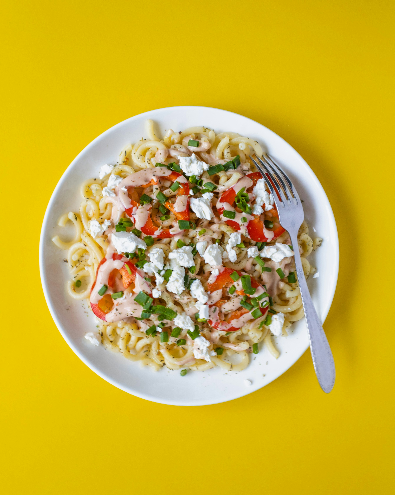

Weeknight dinner
Feta Salmon Pasta
This is a delicious pasta dish made with feta cheese and salmon. Perfect for a quick and tasty dinner!

Ingredients
Tick things off as you gather them.
Steps
- In a baking dish, add your salmon fillet, block of feta and clove of garlic, then drizzle with olive oil.
- Bake in the oven at 375°F for 30 minutes.
- Remove the baking dish from the oven.
- Squeeze the roasted garlic out of its skin.
- Mix until all the ingredients are combined.
- Add your pasta, cooked according to the package instructions, and mix well.
- Serve and enjoy!